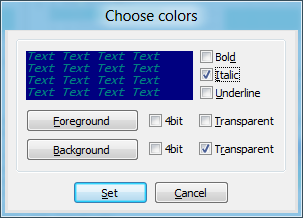

ConEmu implements extended console feature. This is new in Far Manager 3.x and ConEmu. When ExtendedConsole.dll (ExtendedConsole64.dll) located in ConEmu folder (next to ConEmuC.exe), Far 3.x started in ConEmu and checkbox Colorer TrueMod support is turned on - console program acquires 16M colors for text drawing and bold/italic/underline type faces.
